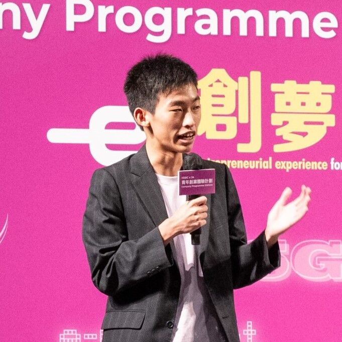
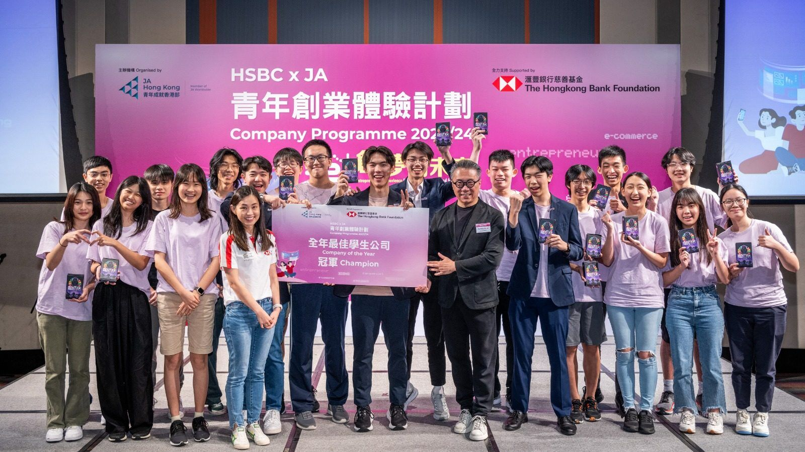
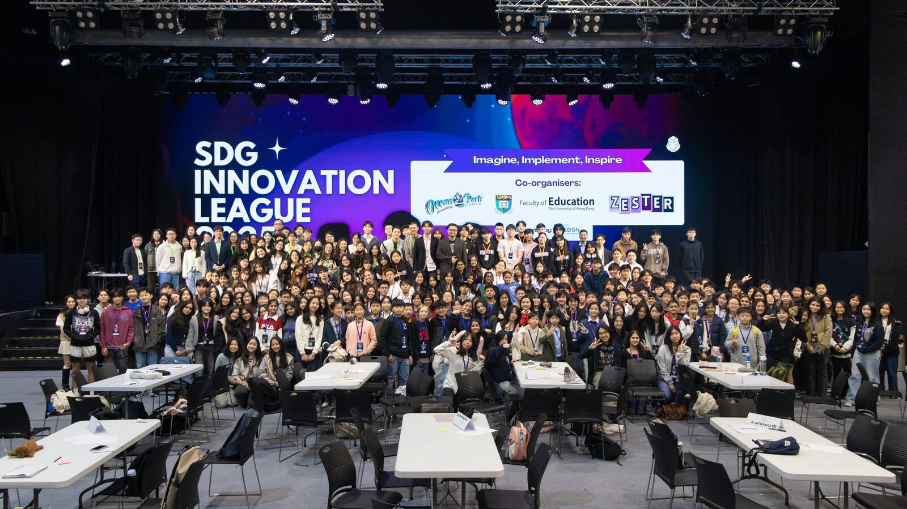

Co-founder, Zester · HKUST BBA Global Business
Building sustainability education that reaches 30,000+ students.
I'm Jonathan Wong, a Hong Kong student entrepreneur turning the UN SDGs into something young people actually play.

About
I'm a first-year BBA Global Business student at HKUST. Most of my time outside class goes into Zester, the sustainability social enterprise I co-founded in 2023, alongside a mix of consulting, research, and internship work I run in parallel with it.
Zester has reached 30,000+ students across 44+ schools and corporate partners including HSBC, BNY, and TTI, and was named one of the top 6 student startups globally at the De La Vega Global Entrepreneurship Awards, out of 500,000+ students and 32,000 teams, and JA Asia Pacific Company of the Year, out of 81,000+ students.
In addition to Zester, I've interned at HKSTP's Partnerships team, and am consulting on client projects through ICC at HKUST, while doing policy research as a volunteer at Liber Research Community.

Selected work

Building a sustainability social enterprise from a school project
Co-founder, COO & CFO. Operations, finance, and partnerships behind a company now working with 44+ schools and corporates like HSBC and BNY.
Read the full story →
SDG Innovation League
Head of Operations & Finance for a three-phase competition that brought 250+ students across 17 schools to pitch SDG projects, backed by HK$350K+ in sponsorship.
Read the full story →Cross-city job vacancy comparative study
Policy research into whether Hong Kong's declining job openings are a local issue or part of a global pattern, later cited in HK01.
Read the full story →Recent Posts
Gallery